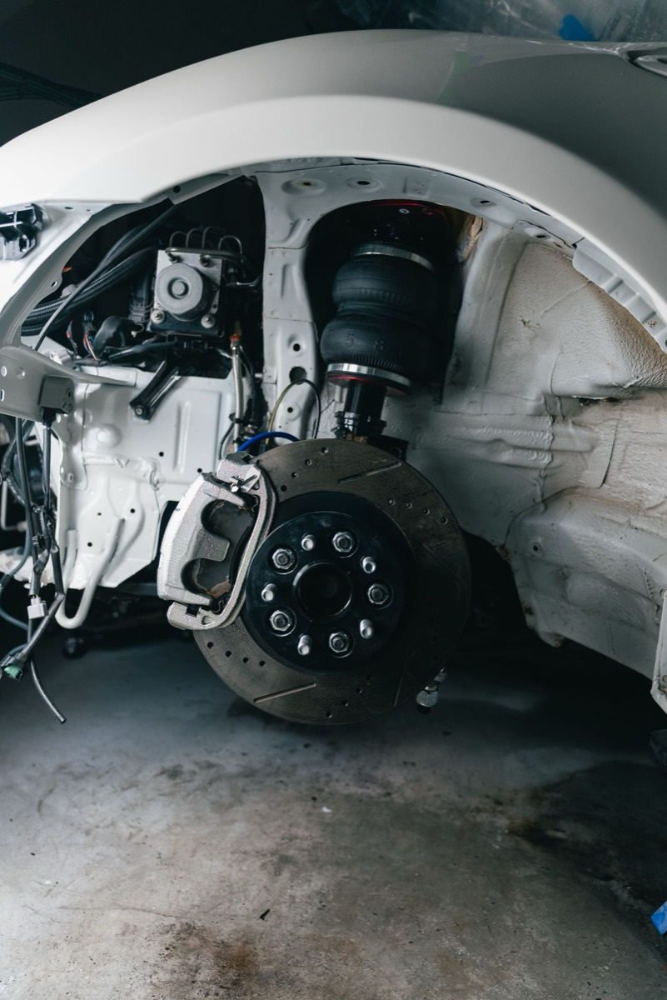
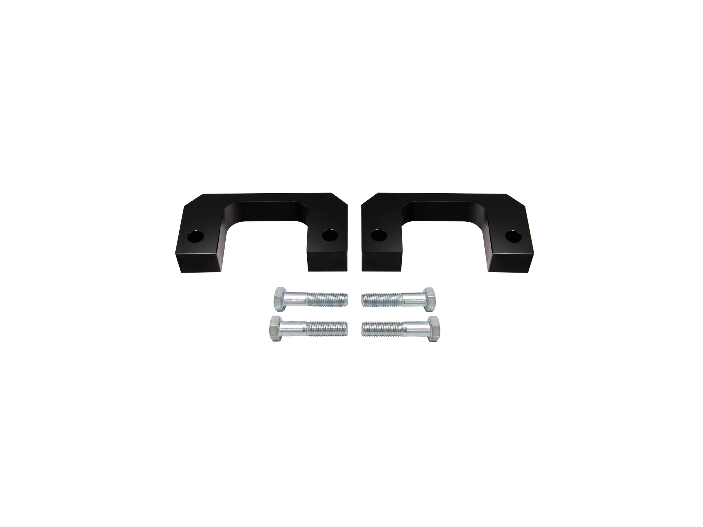
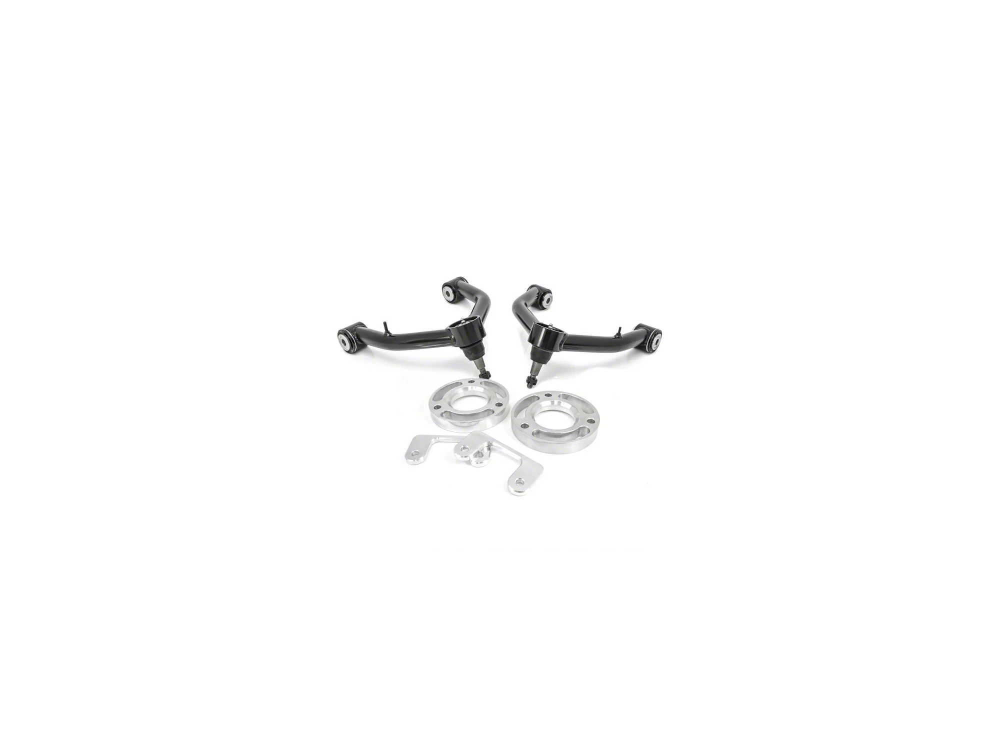

Leveling Kits: What They Change, What They Cost, What You Give Up
The first modification most truck owners make isn't performance. It's posture. Walk up to almost any stock half-ton pickup and the front sits visibly lower than the rear. That's intentional. Manufacturers build in a rearward rake so the truck sits level once you put weight in the bed or hook up a tr

The first modification most truck owners make isn’t performance. It’s posture.
Walk up to almost any stock half-ton pickup and the front sits visibly lower than the rear. That’s intentional. Manufacturers build in a rearward rake so the truck sits level once you put weight in the bed or hook up a trailer. It’s a sensible engineering decision that looks wrong in a parking lot. A leveling kit is the fix, and it’s the single most common first modification on these trucks.
Here’s what a leveling kit does, what it costs you, and where the trade-offs actually land.
What a leveling kit is
A leveling kit raises the front of the truck to match the rear. It comes in two forms:
Strut spacer kit. A machined aluminum or polyurethane spacer that bolts on top of the front strut assembly. It’s the cheaper option, it doesn’t change your ride quality much at modest heights (1.5–2 inches), and it can be installed without disassembling the strut in many cases. This is what most people mean when they say “leveling kit.”
Full strut replacement. A complete replacement strut with the lift built in, often with adjustable damping. More expensive, but it lets you correct the geometry properly and improve ride quality at the same time.
For a mostly-street 4x4, a 1.5–2 inch strut spacer is the standard answer. Beyond 2 inches you’re into geometry-correction territory and the calculus changes.

The real cost isn’t the kit
The spacer itself runs roughly $80–$250 depending on brand and material. That’s not where the money goes. Budget for:
- Alignment. Mandatory after any front suspension height change. Skipping this is the most common mistake and it eats tires fast.
- Labor or your own Saturday. Strut spacers on these trucks are a moderate DIY job. You’ll need a spring compressor if you disassemble, proper jack stands, and a torque wrench you actually use. Figure 3–5 hours for a first-timer.
- New upper control arms, if you go above ~2 inches. Past that point the factory UCAs can’t hold proper caster/camber, and you’ll get ball joint bind and poor alignment numbers.

What the Truck Itself Changes
Trim level changes the look, not the suspension architecture. Within a given platform the front strut layout is shared across trims, so a leveling kit fits the same way whatever badge is on the tailgate. What differs between trucks is weight and how you use it:
- A typical half-ton 4x4 crew cab runs roughly 5,000–5,800 lb curb weight depending on cab, engine and equipment. Check your own door jamb sticker rather than a brochure figure.
- What matters more than the badge is the front axle load. A diesel or a big V8 puts noticeably more weight on the front springs than a base V6, and the same spacer produces a different final height on each.
- Published towing figures for half-tons now run from roughly 8,000 lb on a well-equipped mid-range truck to over 13,000 lb on the highest-rated configurations.
That matters for a leveling kit in one specific way: if you tow near the top of your own truck’s range, think twice about lifting the front. Leveling removes some of the designed-in rake, which means the rear squats more visibly under tongue weight and your headlights aim higher at night. If you tow heavy regularly, a rear air bag kit or helper spring is a better first purchase than a front spacer.
What you give up
Four things to know before you buy:
- Headlight aim. Raising the front points your low beams up. Re-aim them after install. This isn’t cosmetic; oncoming drivers will flash you, and it’s a safety issue.
- Aerodynamics and fuel economy. Small but real. Expect a slight highway mpg drop at 2 inches.
- Factory warranty conversations. A spacer alone generally doesn’t void a warranty, but if a front-end component fails, the dealer will look at the modification. Keep receipts and understand the Magnuson-Moss framework in the US, under which the burden is on them to show the mod caused the failure.
- CV axle angle. On a 4x4, the front axles run at a steeper angle after a lift. At 1.5–2 inches this is usually fine. Past that, you’re shortening CV joint life.
Which way to go
If you want the truck to sit right and you mostly drive it on pavement: a 1.5-inch strut spacer, a proper alignment, and re-aimed headlights. That’s it. Don’t buy the 3-inch kit because it looks better in a product photo.
If you tow or haul regularly: leave the rake alone. Buy rear air bags instead. You’ll get more usable capability for similar money.
If you’re chasing actual off-road capability: skip the leveling kit entirely and buy a proper lift with corrected geometry. A leveling kit is a stance modification, and there’s nothing wrong with admitting that’s what you want. Just don’t let a marketing page convince you it’s a performance upgrade.
What the kits actually cost
Prices and review counts as the listings showed them on 4 November 2026. Fitment ranges are the listing’s own, and they are not interchangeable — the 2019–2026 trucks take a different part from the 2007–2018 ones.

Supreme Suspensions 1.50-Inch Pro Billet Lower Strut Spacer (19–26 Silverado 1500)
Fifty dollars for a billet strut spacer is the honest version of this modification: a machined block that sits on top of the strut, no geometry correction claimed, no marketing about performance. It produces the 1.5 inches this article recommends and nothing else.
At this price the risk is not the part, it's the install. A spacer this cheap assumes you have the tools and the confidence to disassemble a strut assembly, or the willingness to pay a shop an hour of labour. Budget for that and it is still the cheapest way to a level truck.
Twelve reviews, which is a small enough base that this page will not pretend otherwise: 92% five stars and a single two-star, averaging 4.75. The two-star is not actually a complaint, which is the most useful thing about it — it reads "Leveled my 2021 RST perfectly. The truck looks much better with it installed. Gives it that more aggressive stance and adds clearance to the front. No change in the ride that I can tell." An owner describing a perfect result and then rating it two stars is a reminder that the star average on a twelve-review part tells you very little. What the review does confirm is the only claim worth checking: no change in ride, which is what a spacer with no geometry correction should deliver at 1.5 inches.
- Price
- $49.95
- Fitment
- 2019–2026, Silverado 1500
- Lift
- 1.50 in, front
- Type
- Lower strut spacer, billet
- Owner reviews
- 12
See the Supreme Suspensions spacer → list price checked 4 Nov 2026

ReadyLIFT 1.50-Inch Front Leveling Kit (19–26 Silverado 1500, excl. Trail Boss & ZR2)
ReadyLIFT is the name with the longest history on this platform, and the money over the Supreme part buys two things worth having: a kit that has been through enough trucks that the fitment problems are documented, and a company with something to lose if it goes wrong.
Note the exclusion. Trail Boss and ZR2 trucks are already lifted from the factory and this kit is not for them. That is the single most common ordering error on this part, and it is written on the listing rather than discovered after delivery.
17 reviews at 4.94, and no rating below four stars — the cleanest record on this page alongside the 1.75-inch kit below. Nothing in the reviews contradicts the exclusion warning, which is mildly informative in itself: the people who buy this kit appear to have read the fitment line. Note also that the listing's own installation-time figure for this one is "shop install" rather than the afternoon the others quote, which is worth pricing before you decide it is a driveway job.
- Price
- $149.95
- Fitment
- 2019–2026, excluding Trail Boss & ZR2
- Lift
- 1.50 in, front
- Owner reviews
- 17
See the ReadyLIFT kit → list price checked 4 Nov 2026

ReadyLIFT 1.75-Inch Front Leveling Kit with Tubular Control Arms (19–26 Trail Boss)
This is the option this article would point you to if you want to level and keep the front end working the way it was designed to. The tubular upper control arms exist to correct the geometry a spacer alone leaves wrong — which is the honest answer to the CV angle and alignment concerns raised above.
It costs three times the Supreme spacer, and it is the only pick here that addresses the actual engineering problem rather than just the ride height. If you are keeping the truck, this is where the money goes.
The reviews support that judgement with the cleanest sample in this guide: 50 ratings at 4.88, with 88% five stars and 12% four and nothing below. On a part whose entire purpose is correcting geometry, the absence of any alignment or wear complaint is the evidence that matters — the same failures that the spacer kit above collects are simply not present here. That is what the extra $480 buys, and it is the one place in these guides where the reviews and the engineering argument point the same way.
- Price
- $529.95
- Fitment
- 2019–2026, Silverado 1500 Trail Boss
- Lift
- 1.75 in, front
- Includes
- Tubular upper control arms
See the ReadyLIFT kit with UCAs → list price checked 4 Nov 2026
We did not install any of these, and we have no measurement of the resulting ride height or alignment change on a specific truck. The lift figures are the manufacturers' claims. Reviews are reported as counts, not as an average score, because star ratings render inconsistently across these listings.
Fitment ranges are exactly as the listings state them. Check your own door jamb sticker before ordering — the year splits on these platforms do not line up with the way people talk about "the new truck".
Topics
- Suspension
- ReadyLIFT
- Supreme Suspensions
- Silverado 1500